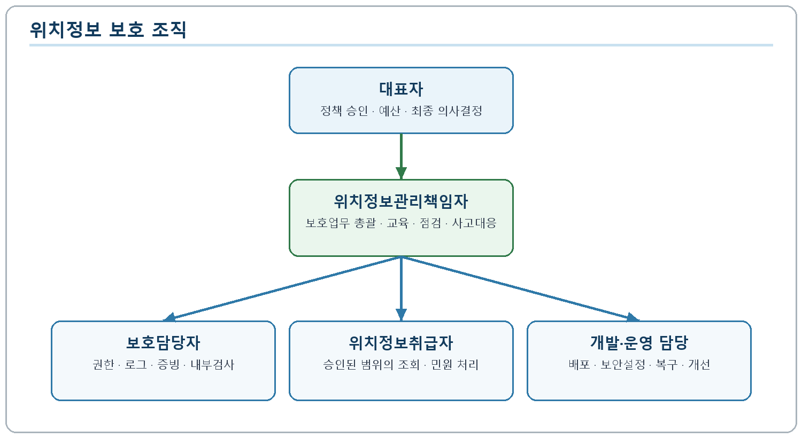
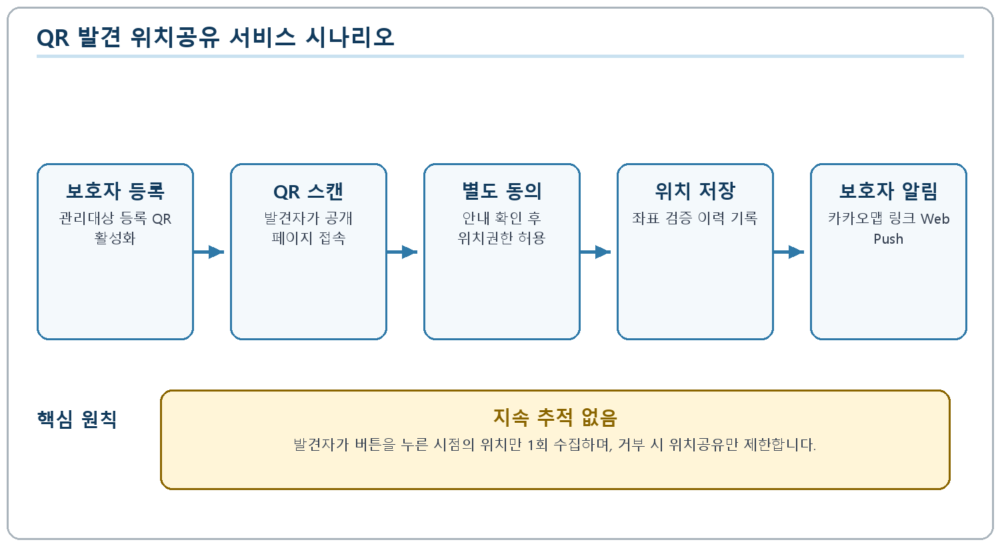
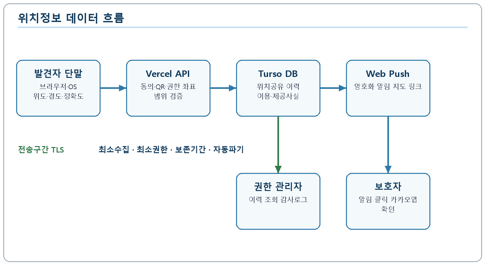
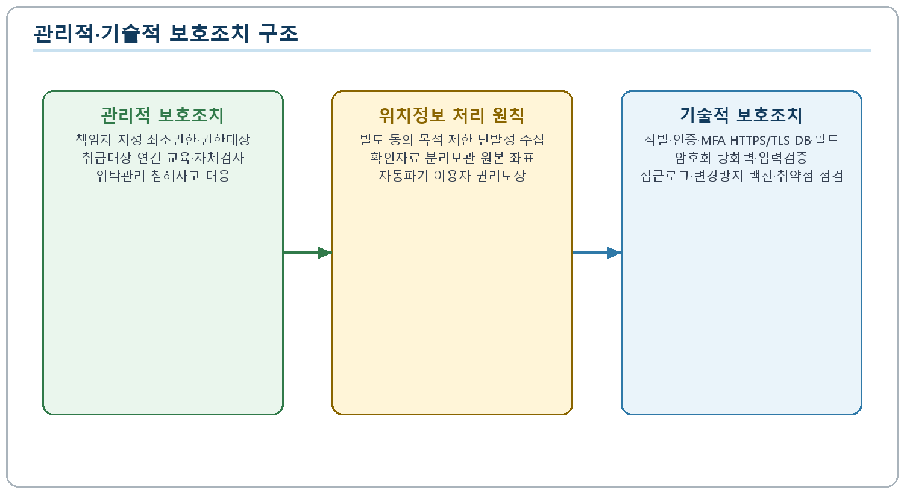
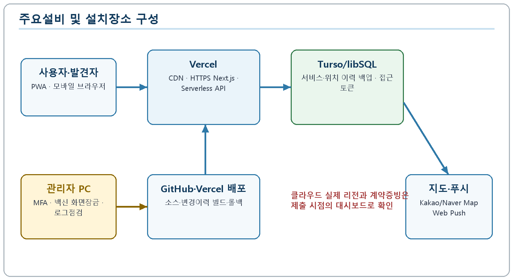

위치기반서비스사업 신고 준비본
| 상호 | 제자리 |
| 대표자 | 이진영, 이진선 |
| 사업자등록번호 | 639-58-00963 |
| 서비스 URL | https://zezari.family |
| 작성기준일 | 2026년 8월 1일 |
문서상태: 제출 준비본 - 보완항목 확인 후 제출
이 문서는 완성 원고이나 신고 제출본으로 확정하기 전에 별도 위치정보 동의, 법정 확인자료 원장, 자동 파기, 좌표 저장 보호, 관리자 감사로그를 구현하고 관련 화면·계약·설정 증빙을 첨부해야 합니다.
| 구분 | 내용 |
|---|---|
| 문서명 | 위치기반서비스 사업계획서 |
| 상호 | 제자리 |
| 서비스명 | 제자리 QR 안심 위치공유 서비스(REAL_QR_FIND) |
| 작성기준일 | 2026년 8월 1일 |
| 위치정보관리책임자 | 이진선(대표자 지정서 확인 필요) |
| 문의 | general@zezari.com / 1668-1290 |
| 항목 | 기재 내용 |
|---|---|
| 상호 또는 명칭 | 제자리 |
| 대표자 | 이진영, 이진선 |
| 사업자등록번호 | 639-58-00963 |
| 사업자 유형 | 제출 전 사업자등록증 기준 확인 |
| 주된 사무소 소재지 | 경기도 김포시 김포한강10로133번길 127, 4층 438-G190호(구래동) |
| 전화번호 | 1668-1290 |
| 전자우편 | general@zezari.com |
| 홈페이지 | https://zezari.family |
| 주요 사업 | QR 기반 관리대상 정보 제공, 안심번호 연결, 위치공유 알림, 상품·광고 운영 |
| 서비스 운영형태 | Next.js 기반 설치형 웹앱(PWA), Vercel 호스팅, Turso/libSQL 데이터베이스 |
| 종업원 수·자본금·매출액 | 제출 전 사업자 증빙 및 회계자료 기준 입력 |
제자리는 보호가 필요한 관리대상자가 길을 잃거나 보호자와 분리된 상황에서 발견자가 QR을 통해 공개 안내 페이지에 접근하고, 본인의 휴대전화 위치를 1회 공유하여 보호자에게 발견 위치를 신속히 전달할 수 있는 서비스를 운영한다. 서비스의 핵심 목적은 지속적인 위치추적이 아니라 발견 시점의 단발성 위치공유와 보호자 통지이며, 관리대상자의 원활한 귀가와 초기 대응 시간을 단축하는 데 있다.
본 서비스는 보호자가 관리대상 정보를 등록하고 전용 QR 상품을 활성화한 후 이용한다. QR 공개 페이지에는 관리대상의 공개가 필요한 최소 정보, 보호자 메시지·음성, 안심번호만 표시한다. 보호자의 성명, 이메일, 주소, 원래 전화번호는 공개하지 않는다. 발견자는 위치공유 버튼을 직접 누르고 브라우저·운영체제의 위치 권한을 허용한 경우에만 해당 시점의 위도, 경도 및 정확도 정보를 서버에 전송한다.

| 역할 | 담당 | 주요 책임 |
|---|---|---|
| 대표자 | 이진영, 이진선 | 위치정보 보호정책 승인, 인력·예산 지원, 사고 대응 최종 의사결정 |
| 위치정보관리책임자 | 이진선(지정 확인 필요) | 위치정보 보호업무 총괄, 취급자 승인, 교육·점검, 이용자 권리 요청 및 침해사고 대응 |
| 위치정보보호담당자 | 제출 전 담당자 지정 | 접근권한 관리, 로그 점검, 보호조치 증빙 관리, 정기 내부검사 |
| 위치정보취급자 | 승인된 최소 인원 | 위치공유 이력의 업무상 조회, 이용자 요청 처리, 사고 조사 지원 |
| 개발·운영 담당 | 승인된 개발·운영자 | 보안 설정, 배포, 장애 대응, 취약점 개선, 백업 및 복구 점검 |
위치정보시스템 접근권한은 대표자 또는 위치정보관리책임자의 승인을 받아 업무상 필요한 최소 인원에게만 부여한다. 인사이동, 담당업무 변경 또는 퇴직이 발생하면 지체 없이 권한을 변경하거나 말소하며, 부여·변경·말소 내역은 최소 5년간 보관한다.
| 구분 | 내용 |
|---|---|
| 서비스 대상 | 보호자, 보호자가 등록한 관리대상, QR을 스캔한 발견자 |
| 위치정보주체 | 위치공유 버튼을 누르고 단말 위치 권한을 허용한 발견자 |
| 위치정보 수집방식 | 웹 브라우저 Geolocation API를 통한 단발성 위도·경도·정확도 수신 |
| 위치정보 이용목적 | 발견 위치 지도 링크 생성, 지정 보호자 알림, 사고 대응 및 관리자 이력 확인 |
| 위치정보 제공대상 | QR에 연결된 관리대상의 보호자(서비스가 사전에 지정한 수신자) |
| 제공방법 | Web Push 및 앱 내 알림에 카카오맵 링크 포함, 네이버지도 링크는 보조 제공 |
| 수집주기 | 발견자가 버튼을 누를 때 1회, 백그라운드·상시 추적 없음 |
| 별도 이용요금 | 위치공유 건별 별도 요금 없음. 활성화된 QR 안심 서비스에 포함 |
| 공개범위 | 관리대상 공개정보와 보호자 안심번호. 보호자 원전화번호·이메일·주소는 미공개 |

보호자는 Google 등 지원되는 인증수단으로 로그인한 뒤 보호자 정보와 최대 등록 한도 내의 관리대상 정보를 입력한다. 관리대상별 이름, 생년월일, 성별, 사진, 보호자 메시지와 음성을 저장할 수 있다. 상품 주문과 QR 수령 후 보호자가 QR을 활성화하면 공개 페이지의 이용이 시작된다. 비활성·미매칭·미활성·서비스 정지 상태인 QR은 관리대상 상세정보와 위치공유 기능을 제공하지 않는다.
발견자는 QR에 저장된 https://zezari.family/find/{public_key} 주소로 접속한다. 서버는 공개 키를 기준으로 QR, 관리대상, 보호자 및 서비스 이용상태를 조회한다. 유효한 경우에만 관리대상 사진과 공개정보, 보호자 메시지·음성, 비즈콜 050 안심번호와 위치공유 버튼을 표시한다.
발견자가 위치공유 버튼을 누르면 서비스는 수집 목적, 제공받는 자, 수집 항목, 보유기간 및 동의거부 가능성을 안내하고 별도 동의를 받는다. 동의 후 브라우저가 운영체제 위치 권한을 요청한다. 허용 시 브라우저가 반환한 위도, 경도, 정확도를 서비스 API로 전달한다. 현재 서비스는 enableHighAccuracy=true, 요청 제한시간 12초, 캐시 위치 사용 안 함으로 동작한다.
서버는 수신 좌표로 카카오맵 링크와 보조 네이버지도 링크를 생성한다. 보호자가 등록한 Web Push 구독으로 {관리대상명} 발견 위치가 공유되었습니다 알림을 전송하고 앱 내 알림 이력도 저장한다. 보호자는 알림을 눌러 지도에서 위치를 확인한다. 푸시 기기가 등록되지 않았더라도 위치공유 이력은 저장되며, 발견자 화면에는 알림기기 미등록 상태를 안내한다.
관리자는 위치공유 관리 메뉴에서 공유일시, 관리대상, 보호자, 좌표, 정확도, 지도 링크 등을 조회한다. 해당 기능은 위치정보취급 권한을 가진 관리자에게만 제공하며 조회·수정·내보내기 행위에 대한 감사로그를 남기도록 보완한다.

| 단계 | 처리 주체 | 입력·처리 | 출력·저장 |
|---|---|---|---|
| 1 | 발견자 | QR 스캔, 위치공유 안내 확인 및 동의 | 공개 키, 동의 이력 |
| 2 | 브라우저·OS | 단말 위치 권한 확인, 현재 위치 산출 | 위도, 경도, 정확도 |
| 3 | Vercel/Next.js API | 요청 검증, QR·서비스 상태 확인, 좌표 범위 검증 | 정상 위치공유 요청 또는 오류 |
| 4 | Turso/libSQL | 위치공유 이력과 이용·제공사실 기록 | 공유 ID, 시각, 관련 주체, 좌표, 접속기록 |
| 5 | 알림 서버 | 카카오맵·네이버지도 링크 생성, Web Push 암호화 전송 | 보호자 기기 알림, 앱 내 알림 |
| 6 | 보호자 | 알림 클릭 및 지도 확인 | 카카오맵에서 발견 위치 표시 |
| 7 | 관리자 | 권한 있는 이력 조회 및 사고 대응 | 감사로그, 처리 결과 |
| 분류 | 항목 | 목적 | 보유 원칙 |
|---|---|---|---|
| 위치정보 | 위도, 경도 | 발견 위치 지도 표시 및 보호자 통지 | 목적 달성 후 지체 없이 파기하되 법정 확인자료는 분리 보관 |
| 위치정보 | 정확도(미터) | 좌표 신뢰범위 안내 | 위치정보와 동일 |
| 이용·제공사실 | 공유일시, QR·관리대상·보호자 식별자, 알림 결과 | 법정 확인자료, 민원·사고 대응 | 최소 6개월 또는 법령·약관에 정한 기간 |
| 접속기록 | 사용자 에이전트, 요청 IP | 부정 이용 탐지와 보안사고 대응 | 목적별 최소기간 설정 후 자동 파기 |
| 지도링크 | 카카오맵 URL, 네이버지도 URL | 보호자 위치 확인 | 위치정보와 동일하거나 링크 무효화 처리 |
| 연락정보 | 보호자 050 안심번호 스냅샷 | 공개 페이지 연락 연결과 운영 확인 | 원전화번호와 분리 관리 |
현행 데이터베이스에는 location_shares 테이블에 위도, 경도, 정확도, 공개 키, 관리대상·보호자 식별자, 안심번호 스냅샷, 지도 URL, 사용자 에이전트, IP 및 생성시각이 저장된다. 신규 공개 페이지는 발견자 전화번호와 위치 설명을 입력받지 않는다. 과거 버전의 호환 컬럼은 존재하나 신규 처리에서는 빈 값으로 저장한다.
본 서비스는 자체적으로 GPS 신호를 측정하지 않는다. 발견자 단말과 브라우저가 제공하는 표준 Geolocation API 결과를 이용한다. Android·Chrome 환경에서는 단말의 Google 위치 서비스가, iOS·Safari 환경에서는 Apple의 위치 서비스가 위치 산출에 관여할 수 있으며 실제 공급자는 단말·브라우저 설정에 따라 달라진다.
카카오맵과 네이버지도는 좌표를 사람이 확인할 수 있는 지도 화면으로 표시하기 위한 외부 지도 서비스이다. 이들은 본 사업계획서에서 단말 위치를 최초 산출하는 위치정보사업자로 기재하지 않고, 지도 링크 표시를 위한 외부 서비스로 구분한다. 보호자가 지도 링크를 여는 시점에 해당 지도 사업자에게 좌표와 접속정보가 전달될 수 있음을 위치기반서비스 이용약관과 개인정보처리방침에 안내한다.
위치공유 기능은 활성화된 QR 안심 서비스에 포함되며 위치공유 건별 요금을 부과하지 않는다. 서비스 수익은 전용 QR 상품 판매, 상품에 포함된 서비스 이용권, 선택적 온라인 실종광고 등으로 구성한다. 결제는 토스페이먼츠를 통해 처리하고 결제수단의 원문 정보는 서비스가 직접 저장하지 않으며 결제 승인에 필요한 주문·금액·상태 정보만 관리한다.
제자리는 위치정보의 보호 및 이용 등에 관한 법률, 같은 법 시행령, 위치정보의 관리적·기술적 보호조치 기준을 준수한다. 위치정보의 수집·이용·제공·파기 단계별로 최소권한, 목적 제한, 보유 최소화, 암호화, 접근기록, 정기점검 원칙을 적용한다.
대표자는 위치정보 보호업무를 총괄하는 위치정보관리책임자와 실무 보호담당자를 서면 지정한다. 책임자는 관리지침 승인, 취급자 지정, 권한 검토, 교육, 자체검사, 사고대응, 이용자 권리 요청 처리 및 보호조치 개선을 담당한다.
위치정보시스템 권한은 수집·이용·제공·파기 및 시스템 운영 단계별로 구분한다. 일반 관리자 계정과 위치정보취급 계정을 분리하고, 조회 권한과 설정·내보내기 권한을 별도로 부여한다. 권한 부여·변경·말소는 승인 절차를 거쳐 기록하며 최소 5년간 보관한다. 분기 1회 이상 계정과 권한을 점검한다.
위치정보취급자는 업무상 필요한 범위에서만 위치정보를 처리하고 목적 외 조회, 개인 장치 저장, 비인가 전송, 화면촬영을 금지한다. 입사·업무배정 시 보안서약서를 받고 퇴직·업무변경 시 계정을 즉시 회수한다. 외부 유지보수 인력이 접근하는 경우 사전 승인, 시간 제한 계정, 작업기록과 비밀유지 조항을 적용한다.
위치정보 수집·이용·제공사실 확인자료에는 처리 시각, 목적, 위치정보주체 또는 서비스 세션 식별자, 제공받는 자, 제공 형태, 처리자와 결과를 포함한다. 확인자료는 원본 위치좌표와 논리적으로 분리하여 최소 6개월간 보관하고, 법령 또는 이용약관에서 더 긴 기간을 정한 경우 해당 기간을 적용한다. 관리자 조회·다운로드·정정·삭제 요청도 취급대장에 기록한다.
위치정보관리책임자, 보호담당자와 취급자를 대상으로 연 1회 이상 위치정보 보호교육을 실시한다. 신규 취급자는 권한 부여 전에 교육을 이수한다. 연 1회 이상 관리적·기술적 보호조치 자체검사를 실시하고 결과, 발견사항, 조치 담당자와 완료일을 기록한다. 고위험 변경이나 침해사고 후에는 수시 검사를 실시한다.
Vercel, Turso/libSQL, Web Push, 지도·인증·결제 사업자 등 외부서비스는 계약·약관·보안문서를 검토하고 처리 목적과 범위를 기록한다. 위탁에 해당하는 경우 계약서에 목적 외 처리 금지, 접근통제, 재위탁, 사고통지, 파기, 점검 권한을 반영한다. 국외 서버가 사용되는 경우 이전 국가, 시기, 항목, 목적과 보유기간을 고지하고 필요한 동의 또는 법적 근거를 확보한다.

보호자와 관리자는 NextAuth 기반 인증을 사용한다. Google 등 SNS 로그인 또는 서비스가 허용한 인증수단을 거친다. 관리자 API와 화면은 세션의 관리자 권한을 서버에서 재검증한다. 위치정보 취급권한은 일반 관리자 권한과 분리하도록 개선하고, 중요작업에는 재인증 또는 다중요소인증을 적용한다.
외부 통신은 https://zezari.family의 HTTPS/TLS를 사용한다. Vercel의 경계망과 배포 플랫폼을 통해 서버리스 함수에 접근하며 애플리케이션은 좌표 범위, QR 상태, 관리대상 매칭, 활성화 및 서비스 이용상태를 서버에서 검증한다. 데이터베이스는 공개 접속정보를 코드에 포함하지 않고 서버 전용 인증 토큰으로 연결한다. 관리자 접근에는 역할 기반 권한, 세션 제한, 비정상 요청 탐지와 속도 제한을 추가 적용한다.
브라우저와 서비스, 서비스와 외부 API 간 전송구간에는 TLS를 적용한다. Web Push 페이로드는 표준 Web Push 암호화 방식으로 전송한다. 비밀번호를 저장하는 경우 단방향 해시를 사용하며 외부 OAuth 비밀번호는 수집하지 않는다. 위도·경도와 위치 이용·제공사실은 데이터베이스 제공자의 저장구간 암호화 증빙을 확보하고, 애플리케이션 계층 필드 암호화 또는 이에 상응하는 보호조치를 신고 전 적용한다. 암호키는 소스와 분리하여 환경변수·비밀관리 기능에 저장하고 주기적으로 교체한다.
위치정보시스템 로그인, 관리자 조회, 내보내기, 권한 변경, 위치공유 생성, 알림 제공, 파기 작업을 전자적으로 자동 기록한다. 접근기록은 최소 1년간 보관하고 월 1회 이상 이상징후를 점검한다. 로그는 운영 데이터와 분리하고 일반 취급자가 임의로 변경·삭제할 수 없도록 제한하며, 주기적 백업 또는 외부 로그보관 기능을 사용한다.
관리자 단말에 실시간 백신과 자동 보안업데이트를 적용한다. 운영 서버와 의존성은 정기적으로 보안업데이트하고 npm audit 등 의존성 점검을 수행한다. 저장소의 비밀정보 커밋 여부, 배포 환경변수 노출, 취약한 공개 API, 관리자 권한 우회를 점검한다. 중대한 취약점은 위험도에 따라 즉시 또는 정해진 기한 내에 조치한다.
데이터베이스 제공자의 백업·복구 기능과 복제 정책을 확인하고 복구 절차를 문서화한다. 배포 버전은 GitHub와 Vercel 이력으로 관리하고 장애 시 직전 정상 버전으로 되돌릴 수 있게 한다. 연 1회 이상 복구훈련을 실시하고 복구시간·데이터 손실 범위·개선사항을 기록한다.
| 보호항목 | 현재 상태 | 신고 전 조치 | 증빙 |
|---|---|---|---|
| 위치 권한 | 브라우저·OS 위치권한 요청 구현 | 서비스 별도 동의 화면과 동의 버전 저장 | 동의 화면·DB 캡처 |
| 위치 수집 제한 | 버튼 클릭 시 1회, 좌표 범위와 QR 상태 검증 | 요청 속도 제한과 반복동의 정책 확정 | 소스·테스트 결과 |
| 전송 암호화 | HTTPS/TLS, Web Push 암호화 | 인증서·보안 헤더 확인자료 보관 | 브라우저·Vercel 캡처 |
| 저장 보호 | Turso 인증 토큰, 서버 전용 접근 | 저장구간 암호화 증빙과 좌표 필드 암호화 적용 | 계약·설정·DB 스키마 |
| 접근통제 | 관리자 권한 검사 구현 | 위치정보취급자 세부 권한과 MFA 적용 | 계정·권한 캡처 |
| 이용·제공사실 | 위치공유·알림 이력 저장 | 법정 확인자료 전용 원장과 6개월 보존 구현 | 테이블·조회 화면 |
| 접근로그 | Vercel 운영로그 및 일부 앱 로그 | 관리자 조회·내보내기·파기 감사로그, 1년 보존 | 로그 화면·정책 |
| 파기 | 수동 삭제 가능 구조 | 원본 좌표 자동 파기와 결과대장 구현 | 배치·파기로그 |
| 교육·점검 | 문서 기준 수립 | 연간 교육, 자체검사, 서약서 실행 | 교육대장·점검표 |
| 사고대응 | 일반 운영 대응 | 위치정보 침해사고 전용 연락망·훈련 | 대응절차·훈련기록 |
| 설비·서비스 | 용도 | 주요 보호조치 | 설치·운영 장소 |
|---|---|---|---|
| Vercel CDN·웹 호스팅 | 정적 화면, PWA, HTTPS 제공 | TLS, 배포 접근통제, 플랫폼 경계 보호 | Vercel 클라우드. 현재 배포 리전과 계약 주체를 제출 시 확인 |
| Vercel Functions | 위치공유 API, 인증·업무 로직 | 서버 세션 권한검사, 입력 검증, 환경변수 분리 | Vercel 서버리스 실행환경 |
| Turso/libSQL | 회원·QR·위치공유·알림 데이터 저장 | 인증 토큰, 최소권한, 백업, 저장 암호화 증빙 | Turso 클라우드. 실제 기본 리전 제출 전 확인 |
| GitHub | 소스·변경이력 관리 | 계정 인증, 저장소 권한, 커밋 이력, 비밀정보 제외 | GitHub 클라우드 |
| Web Push/VAPID | 보호자 기기 알림 전송 | VAPID 키, 표준 페이로드 암호화, 만료 구독 삭제 | 브라우저 푸시 제공자 네트워크 |
| Kakao Map·Naver Map | 좌표 지도 표시 | 외부 링크 최소전달, 링크 접근 시 사업자 정책 적용 | 외부 지도 사업자 클라우드 |
| 관리자 업무용 PC | 운영·민원·사고 대응 | 화면잠금, 계정 분리, 백신, OS 업데이트, 저장매체 통제 | 주된 사무소 내 지정 장소 |
| 네트워크 장비 | 관리자 인터넷 접속 | 공유기 관리자 암호, 최신 펌웨어, 무선 암호화 | 주된 사무소 내 지정 장소 |
클라우드 설비는 물리 장비를 제자리 사무실에 설치하지 않고 각 서비스 제공자의 데이터센터에서 운영한다. 제출 시 Vercel 프로젝트·도메인·배포 현황, Turso 데이터베이스 리전·백업·암호화 설정, GitHub 저장소 접근권한, Web Push 키 관리 화면을 캡처한다. 계약서, 이용내역, 청구서 또는 서비스 가입을 확인할 수 있는 자료를 함께 준비한다.
사무실 설비는 사업장 임대차계약서 또는 건물등기·사업자등록증, 관리자 PC와 네트워크 장비 사진, 백신 실행 화면, 화면잠금·자동업데이트 설정 화면으로 설치장소와 보호조치를 확인한다. 캡처에는 실제 비밀키, 토큰, 전체 전화번호, 개인 주소 등 민감정보가 노출되지 않도록 마스킹한다.

이 지침은 제자리가 제자리 QR 안심 위치공유 서비스를 운영하면서 처리하는 개인위치정보와 위치정보 수집·이용·제공사실 확인자료를 안전하게 보호하고, 위치정보주체의 권리를 보장하기 위한 관리적·기술적 절차를 정함을 목적으로 한다.
이 지침은 제자리 임직원, 계약자, 외부 유지보수 인력, 위치정보시스템과 위치정보를 처리하는 모든 업무에 적용한다. 외부 클라우드와 위탁업체에도 계약과 점검을 통해 필요한 보호조치를 적용한다.
대표자는 위치정보관리책임자, 위치정보보호담당자와 취급자를 지정한다. 위치정보관리책임자는 보호계획, 예산, 교육, 권한, 점검, 사고대응 및 이용자 권리보장을 총괄한다. 보호담당자는 일상 점검과 기록관리를 수행하고 취급자는 승인된 범위에서만 업무를 수행한다.
위치정보관리책임자는 매년 1월 말까지 다음 항목을 포함한 보호계획을 수립한다.
위치정보는 서비스 목적에 필요한 최소 범위에서 적법한 동의를 받은 후 수집한다. 제자리 서비스는 발견자가 위치공유 버튼을 직접 누르고 단말 권한을 허용한 시점의 좌표만 수집하며 백그라운드 또는 지속 추적을 하지 않는다. 수집 전에 목적, 항목, 보유기간, 제공받는 자와 거부권을 고지한다.
수집한 위치는 발견 위치 지도 링크 생성, 지정 보호자 알림, 이용자 요청과 보안사고 대응에만 이용한다. 다른 목적이나 다른 제3자에게 제공하려면 법적 근거와 별도 동의를 확인한다. 제공 시 제공일시, 제공받는 자, 목적, 항목, 방법과 결과를 기록한다.
동의 이력에는 동의 시각, 고지문 버전, 동의항목, QR 공개 키 또는 세션 식별자, 처리 결과를 포함한다. 고지문이 변경되면 버전을 올리고 변경 전후 문구와 시행일을 보존한다. 동의하지 않은 사용자의 위치정보는 수집하지 않는다.
원본 위치정보는 목적 달성 후 지체 없이 복구할 수 없는 방법으로 파기한다. 이용·제공사실 확인자료는 최소 6개월간 별도 보관하며, 다른 법령에서 더 긴 기간을 요구하는 경우 그 기간을 따른다. 접근기록은 최소 1년, 권한 부여·변경·말소 기록은 최소 5년간 보관한다. 자동 파기 작업의 실행일, 대상, 건수, 결과와 승인자를 파기대장에 기록한다.
접근권한은 업무단계와 직무별 최소 범위로 부여한다. 권한 신청, 승인, 부여, 변경, 정기검토, 말소 절차를 따른다. 공유계정 사용을 금지하고 사용자별 식별자를 사용한다. 관리자와 위치정보취급자는 강력한 인증수단과 다중요소인증을 사용한다.
위치정보의 조회, 제공, 다운로드, 정정, 삭제, 파기, 권한변경과 사고대응 작업을 취급대장에 기록한다. 대장에는 처리자, 처리일시, 목적, 대상 범위, 승인자와 결과를 포함하며 임의 수정·삭제를 제한한다.
위치정보시스템 접근사실을 자동 기록하고 최소 1년간 보관한다. 보호담당자는 월 1회 이상 비정상 시간대 접속, 대량 조회·내보내기, 반복 실패, 권한 없는 접근과 로그 삭제 시도를 점검한다. 이상징후는 즉시 위치정보관리책임자에게 보고한다.
위치정보는 전송 시 TLS를 적용하고 저장 시 암호화 또는 이에 상응하는 보호조치를 적용한다. 암호키는 데이터와 분리하고 소스 저장소에 기록하지 않는다. 키 접근권한을 제한하고 발급·교체·폐기 이력을 관리한다. 백업 데이터에도 동일한 수준의 암호화를 적용한다.
위치정보 처리를 위탁하거나 외부 클라우드를 사용할 때는 처리목적, 항목, 보유기간, 보안조치, 재위탁, 사고통지와 파기를 계약 또는 약관으로 확인한다. 연 1회 이상 수탁자 보호조치를 점검하고 미흡사항의 개선을 요구한다.
위치정보관리책임자, 보호담당자와 취급자는 매년 1회 이상 교육을 이수한다. 교육에는 법령, 내부지침, 최소권한, 위치정보 처리절차, 사회공학·악성코드 대응, 사고신고와 실제 사례를 포함한다. 신규 취급자는 권한 부여 전에 교육한다.
연 1회 이상 관리적·기술적 보호조치, 동의, 보유·파기, 권한, 로그, 위탁, 교육 및 사고대응을 검사한다. 결과는 적합·보완·부적합으로 구분하고 개선담당자와 완료기한을 지정한다. 중대한 미흡사항은 대표자에게 즉시 보고한다.
위치정보 누출, 변조, 훼손, 권한 오남용 또는 서비스 침해가 의심되면 취급자는 즉시 보호담당자와 책임자에게 보고한다. 책임자는 접근 차단, 증거 보전, 영향범위 조사, 이용자와 관계기관 통지, 복구, 재발방지 조치를 수행한다. 신고·통지 시기와 내용은 관계 법령을 따른다.
위치정보주체는 동의의 전부 또는 일부를 철회하거나 이용·제공의 일시중지를 요구할 수 있고 이용·제공사실 확인자료의 열람·고지와 오류 정정을 요구할 수 있다. 요청은 대표메일 또는 서비스 문의로 접수하고 본인확인 후 법정 기한 내 처리한다.
위치정보를 알게 된 자는 업무 중과 퇴직 후에도 이를 누설하거나 목적 외 이용해서는 안 된다. 지침 위반은 접근권한 회수, 재교육, 징계, 계약해지와 법적 조치의 대상이 될 수 있다.
이 지침은 대표자 승인일부터 시행한다. 법령, 서비스 구조 또는 위치정보 처리방식이 변경되면 책임자가 검토하여 개정하고 변경 이력과 이전 버전을 보존한다.
| 버전 | 시행일 | 주요 내용 | 승인 |
|---|---|---|---|
| 1.0 | 제출 전 승인일 입력 | 위치기반서비스 신고용 최초 제정 | 대표자 서명 필요 |
| 번호 | 증빙자료 | 준비상태 | 제출 전 조치 |
|---|---|---|---|
| A-01 | 관리자 로그인 화면과 관리자 권한검사 소스 | 준비 가능 | 테스트 계정·개인정보 마스킹 |
| A-02 | 위치정보취급자 계정·권한 목록 | 보완 필요 | 일반 관리자와 위치취급 권한 분리 |
| A-03 | 다중요소인증 또는 재인증 화면 | 보완 필요 | GitHub·Vercel·DB·관리자 MFA 적용 |
| A-04 | 권한 신청·승인·말소대장 | 서식 준비 | 실제 승인 서명과 날짜 입력 |
| 번호 | 증빙자료 | 준비상태 | 제출 전 조치 |
|---|---|---|---|
| B-01 | zezari.family HTTPS 인증서와 보안 연결 화면 | 준비 가능 | 인증서 유효기간 포함 캡처 |
| B-02 | Vercel 프로젝트·도메인·방화벽 또는 플랫폼 보안 화면 | 준비 가능 | 비밀값·계정정보 마스킹 |
| B-03 | Turso 접근 토큰·네트워크 정책 화면 | 준비 가능 | 토큰값 전체 마스킹 |
| B-04 | Turso 저장 암호화·백업 정책 문서 | 확인 필요 | 공식 문서·계약자료 확보 |
| B-05 | 위치좌표 필드 암호화 또는 이에 상응하는 조치 | 보완 필요 | 적용 소스·키관리 정책·테스트 증빙 |
| B-06 | 환경변수와 소스 분리 화면 | 준비 가능 | 키 이름만 표시하고 값은 비공개 |
| 번호 | 증빙자료 | 준비상태 | 제출 전 조치 |
|---|---|---|---|
| C-01 | 위치공유 생성 로그와 DB 이력 | 구현됨 | 개인정보 마스킹한 화면 캡처 |
| C-02 | 관리자 위치공유 조회·내보내기 감사로그 | 보완 필요 | 이벤트·행위자·시각·대상·결과 기록 |
| C-03 | 접근로그 1년 보관정책 | 보완 필요 | 별도 로그저장소와 변경방지 설정 |
| C-04 | 월간 로그 점검표 | 서식 준비 | 실제 점검일·점검자·결과 입력 |
| 번호 | 증빙자료 | 준비상태 | 제출 전 조치 |
|---|---|---|---|
| D-01 | 위치정보 수집·이용·제공사실 확인자료 원장 | 보완 필요 | 전용 테이블과 6개월 보존 구현 |
| D-02 | 동의 이력·고지문 버전 | 보완 필요 | 별도 동의 UI와 DB 저장 구현 |
| D-03 | 원본 좌표 자동 파기 배치 | 보완 필요 | 보존기간 설정·배치·실패 재처리 |
| D-04 | 파기대장과 파기결과 로그 | 서식 준비 | 자동·수동 파기 모두 기록 |
| 번호 | 증빙자료 | 준비상태 | 제출 전 조치 |
|---|---|---|---|
| E-01 | 관리자 PC 백신 실시간 감시 화면 | 현장 확인 필요 | 제품명·업데이트일·실시간 보호 캡처 |
| E-02 | OS 자동업데이트와 화면잠금 설정 | 현장 확인 필요 | 지정 관리자 단말 캡처 |
| E-03 | 의존성 취약점 점검·배포 테스트 결과 | 준비 가능 | 최신 빌드·감사 결과 첨부 |
| E-04 | 백업·복구 시험 기록 | 보완 필요 | 복구훈련 후 결과 작성 |
| 번호 | 서류 | 상태 | 비고 |
|---|---|---|---|
| F-01 | 사업자등록증 사본 | 제출자 준비 | 상호·대표자·주소·업태·종목 대조 |
| F-02 | 법인등기사항증명서 또는 개인사업자 확인서류 | 제출자 준비 | 사업자 유형에 맞게 첨부 |
| F-03 | 대표자 신분·위임 관련 서류 | 필요 시 준비 | 대리 신고 시 위임장 포함 |
| F-04 | 사업장 임대차계약서 또는 사용권한 확인서류 | 제출자 준비 | 주된 사무소 주소 대조 |
| F-05 | 클라우드 서비스 계약·가입·청구 확인자료 | 준비 가능 | Vercel, Turso 등 실제 사용 증빙 |
| F-06 | 위치정보관리책임자 지정서 | 서식 작성 필요 | 대표자 승인·시행일 포함 |
| F-07 | 위치정보취급자 보안서약서 | 서식 작성 필요 | 실제 취급자별 서명 |
| F-08 | 교육대장·내부점검표·사고대응 연락망 | 실행 후 첨부 | 제출 시점 최신 자료 |
| 점검항목 | 완료기준 | 상태 |
|---|---|---|
| 신고서 상호·대표자·주소 | 사업자등록증과 완전 일치 | 확인 필요 |
| 위치정보관리책임자 | 지정서 서명·시행일 포함 | 확인 필요 |
| 별도 위치정보 동의 | 고지·동의 UI, 동의버전·시각 저장 | 개발 필요 |
| 이용·제공사실 확인자료 | 전용 원장과 최소 6개월 보존 | 개발 필요 |
| 위치좌표 저장 보호 | 필드 암호화 또는 공식 동등조치 증빙 | 개발·증빙 필요 |
| 접근사실 기록 | 관리자 조회·내보내기·파기 감사로그, 최소 1년 보존 | 개발 필요 |
| 자동 파기 | 원본 좌표 보유기간 도래 시 자동 파기 | 개발 필요 |
| 취급자 권한 | 최소권한·MFA·권한대장 | 운영 설정 필요 |
| 교육·자체검사 | 연간 계획과 실제 기록 | 실행 필요 |
| 외부서비스 증빙 | Vercel·Turso·지도·푸시 계약 및 정책 | 자료 준비 필요 |
| 관리자 단말 보안 | 백신·업데이트·화면잠금 증빙 | 현장 확인 필요 |
| 약관·처리방침 | 위치정보 수집·이용·제공·권리·파기 반영 | 법률 검토 필요 |
| 문서 법률 검토 | 최신 법령과 실제 운영의 일치 확인 | 전문가 검토 권장 |
법률 검토 안내: 본 계획서는 신고 준비를 돕는 기술·운영 문서이며 법률 자문을 대체하지 않는다. 제출 전 최신 신고서식, 관할기관 안내, 실제 계약·운영환경 및 전문가 검토 결과를 반영해야 한다.